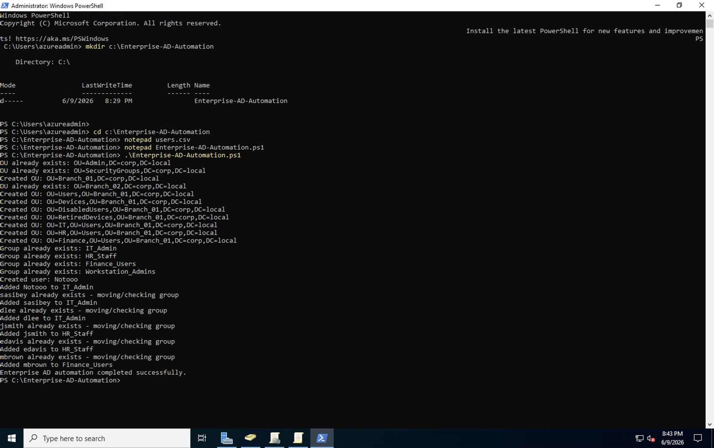
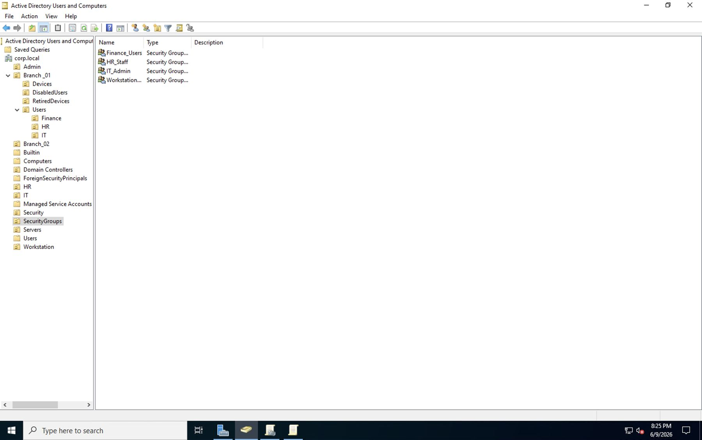
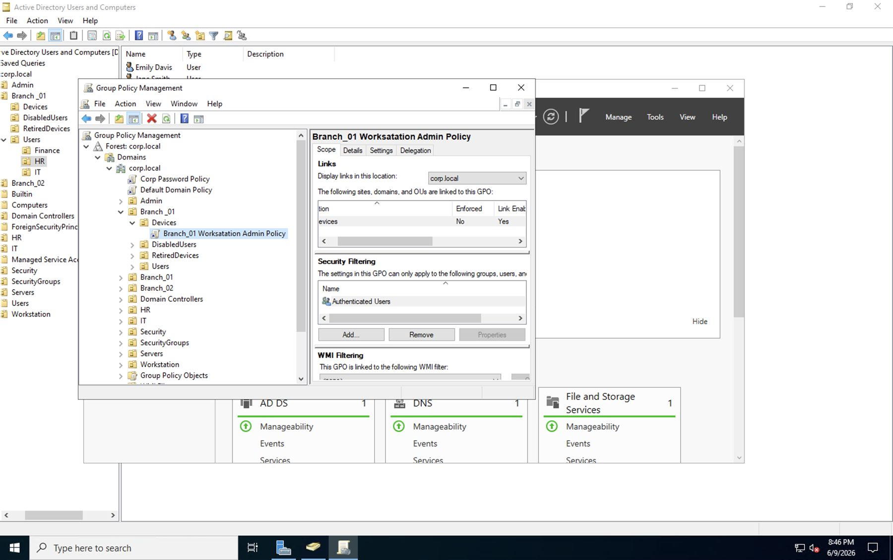

What I built
- Deployed a Windows Server 2022 domain controller as an Azure virtual machine.
- Promoted it and created the corp.local Active Directory domain, with DNS.
- Designed a branch-based OU structure with separate OUs for each department, devices, disabled users and retired devices.
- Created security groups for role-based access: IT_Admin, HR_Staff, Finance_Users and Workstation_Admins.
- Wrote a PowerShell script that reads users from a CSV, creates any missing OUs and groups, and puts each user in the right place.
- Configured Group Policy Objects and linked them to the OUs they apply to.
OU structure
corp.local ├── Admin ├── SecurityGroups ├── Branch_01 │ ├── Users │ │ ├── IT │ │ ├── HR │ │ └── Finance │ ├── Devices │ ├── DisabledUsers │ └── RetiredDevices └── Branch_02
Disabled users and retired devices get their own OUs, so offboarded accounts can be held and audited without staying under active policy.
Why the script checks before it creates
The script is safe to run more than once. If an OU, group or user already exists, it reports it and moves on instead of failing or creating duplicates. That makes it usable for onboarding new hires in batches, not just for the first build.
Screenshots



